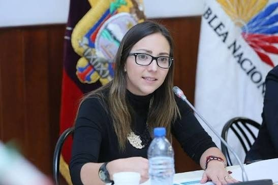
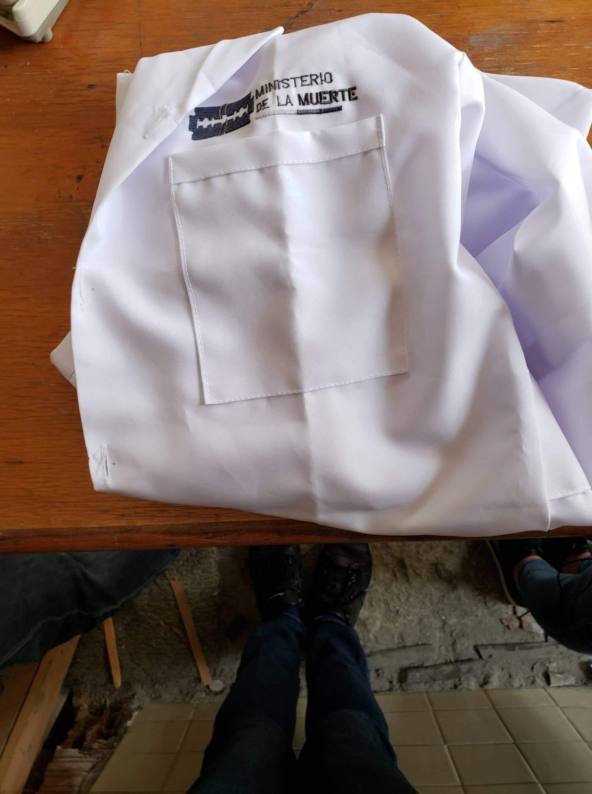
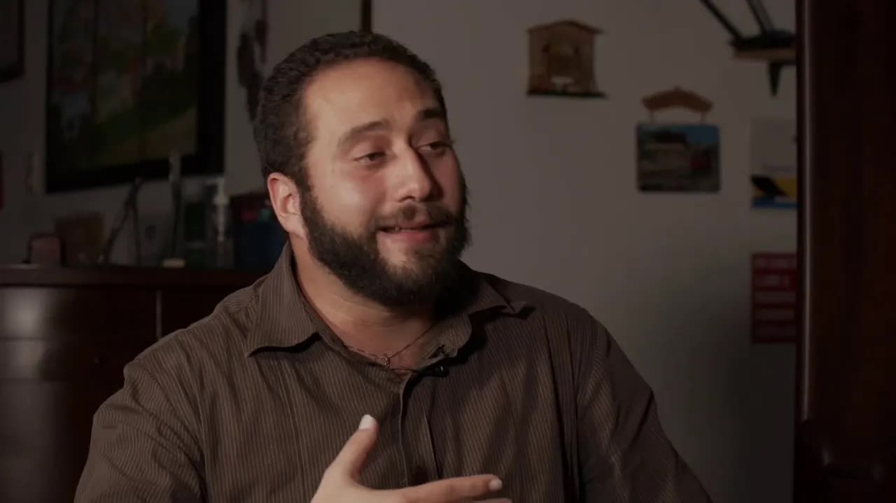
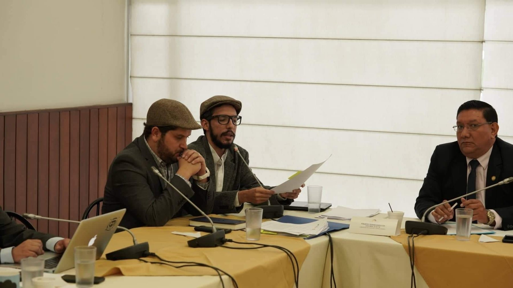
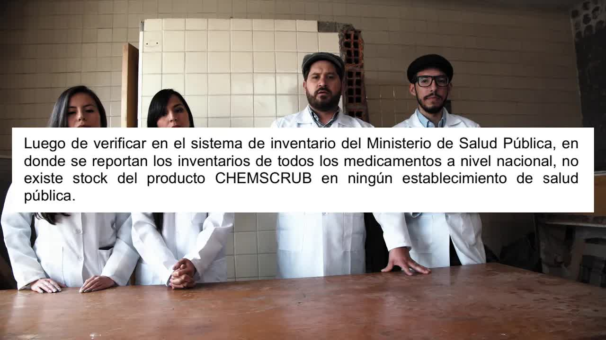
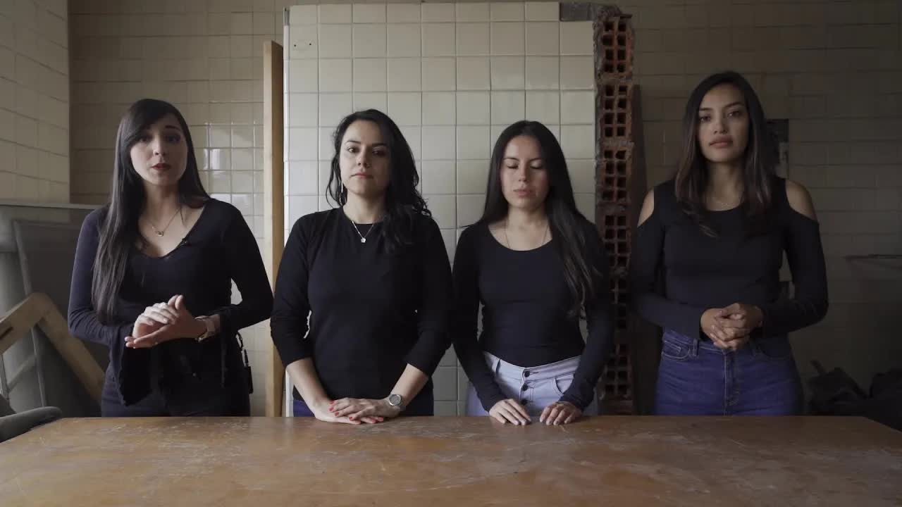
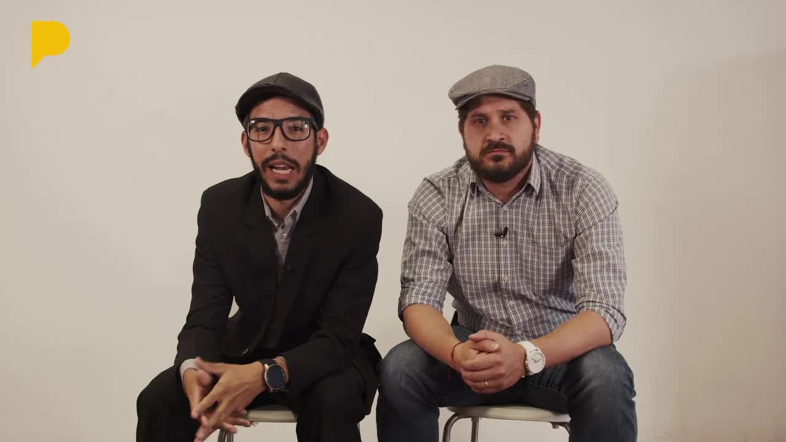

Kits de VIH
Falsos negativos y falsos positivos
33 % de las pruebas de 2017 no detectaban el virus; las de 2018 fallaban en el 40 %. El Ministerio devolvió unas y guardó otras en bodega sin alertar a nadie.
Pruebas de VIH que decían que no cuando era sí. Un desinfectante para quirófanos cargado de bacterias. Paracetamol inyectable con partículas flotando. Un laboratorio de medicinas contra el cáncer con polvo en las máquinas. Bebés muriendo en un hospital de Guayaquil y una maternidad de Quito con heces en los pasillos. Todo estaba en informes de la propia agencia de control del Ministerio de Salud. Nadie los había hecho públicos.

Para entender esta historia hay que saber qué hace la Arcsa. Es la Agencia de Regulación y Control Sanitario, la oficina del Ministerio de Salud que revisa que las medicinas y los insumos que entran a los hospitales sirvan y no hagan daño. Cuando encuentra un producto malo, la ley la obliga a levantar una alerta pública. Entre 2017 y 2019 la Arcsa encontró varios y el Ministerio guardó los informes en un cajón. Una fuente interna se los entregó a La Posta.

El 7 de mayo de 2019 salió el primer video, nueve minutos y medio. Desde 2017 el Ministerio compraba kits de detección rápida de VIH de cuarta generación mediante licitaciones de régimen especial, sin concurso abierto, por cerca de tres millones de dólares. Son pruebas parecidas a las de embarazo: una gota de sangre, un reactivo, un resultado en minutos. En octubre de 2017 un memorando interno reportó falsos negativos en Los Ríos, Bolívar, Santa Elena y Guayas: pacientes que ya tenían el virus recibían un resultado limpio. El laboratorio de la Arcsa lo confirmó: el 33 por ciento de las pruebas no identificaba el VIH con claridad. El Ministerio devolvió el lote al proveedor coreano y no dijo nada. El informe recomendaba aplicar pruebas confirmatorias. La fuente que lo firmó dudaba además del almacenamiento y transporte a cargo del Ministerio, en bodegas sin certificar; el producto coreano no tenía registro sanitario ecuatoriano.
En 2018 volvió a comprar, con fondos internacionales y a través de un organismo intermediario. Un contrato de 1,6 millones, firmado por la propia ministra, por 87.000 kits de procedencia japonesa; entre 2017 y 2018 se compraron unas 36.000 pruebas al año por cerca de millón y medio cada vez, mientras los casos de VIH subían un 15 por ciento. Esta vez el Ministerio los probó antes de repartirlos y el resultado fue peor: 26,6 por ciento de falsos negativos y 20 por ciento de falsos positivos. A gente con VIH le decían que no lo tenía y a gente sana le decían que sí. Un investigador de la Universidad de Rutgers consultado por La Posta dijo que una prueba con 5 por ciento de error no circularía en Estados Unidos ni en Europa; aquí el error era casi siete veces mayor. El informe, listo en octubre de 2018, recomendaba no usarlas. Según quien lo firmó, el Ministerio pidió a la Arcsa, a puerta cerrada y de forma verbal, que lo revisara de modo que las pruebas pudieran salir de bodega, y siete meses después alguien del Ministerio llamó a la encargada de los laboratorios para pedirle que agregara un par de líneas y así habilitar la distribución. Consultado, el Ministerio respondió por escrito que el 1,6 millones en pruebas seguía en bodega.
No es cierto. Las personas deben confiar en una estrategia mundial que es el tamizaje temprano.
Verónica Espinosa, ministra de Salud, 7 de mayo de 2019
La ministra respondió el mismo día con dos palabras: no es cierto. El Ministerio dijo que las pruebas tenían certificación de la Organización Mundial de la Salud, que la Arcsa había hecho controles con plasma certificado y que ONUSIDA las respaldaba. Ese tercer informe, que le lavaba la cara, se emitió el 15 de abril de 2019, seis días después de que La Posta preguntara, y lo firmó la misma persona que firmó los dos primeros; la ministra no supo decir quién pagó el plasma certificado. Una semana después, el 14 de mayo, Espinosa vino a Café la Posta a responder en persona durante una hora. La segunda entrega había salido la víspera.
La segunda entrega fue un desinfectante. Chemscrub se usaba en los quirófanos y en emergencias para limpiar la piel antes de operar o curar una herida. El 17 de noviembre de 2017 el Ministerio de Salud notificó, con el memorando 2910, un brote de infecciones respiratorias en el Hospital Militar de Quito que los médicos atribuyeron al desinfectante. La Arcsa lo analizó: el recuento de microorganismos era incontable, con Achromobacter denitrificans y Comamonas testosteroni, identificadas gracias a una investigadora del INSPI. La carga bacteriana era mil veces mayor que la permitida. Entre el aviso del hospital y la resolución que lo retiró pasaron tres meses. El producto venía contaminado desde la fábrica, en la vía a Daule, una planta con certificado de buenas prácticas de manufactura; había dos presentaciones, al 4 y al 2 por ciento, y la segunda ni siquiera tenía registro sanitario. El Ministerio dijo que solo cuatro pacientes se infectaron y que ninguno murió. Sobre los demás hospitales contestó que el producto ya no estaba en stock. La sanción: registro suspendido temporalmente y retiro del permiso de funcionamiento; ninguna investigación interna ni penal.
La tercera fue el paracetamol. En 2016 el Estado compró por 355.000 dólares paracetamol inyectable de 10 miligramos por mililitro de un proveedor de la India, por subasta inversa, el mecanismo que obliga a elegir lo más barato. El 28 de abril de 2017 el hospital San Francisco de Quito reportó partículas extrañas dentro del frasco. Una enfermera se negó a aplicarlo. El 22 de mayo la Arcsa suspendió el lote de forma provisional y el 6 de junio de 2017 lo declaró inestable: no cumplía los parámetros de esterilidad. Aun así, cuatro meses después el Hospital Militar volvió a encontrarlo. La Posta documentó que llegó a ocho hospitales: el Abel Gilbert de Guayaquil, el Luis Dávila de Tulcán, la maternidad Isidro Ayora de Quito, el José Carrasco Arteaga del IESS en Cuenca, los básicos de Guaranda y Quevedo, el San Francisco de Quito y el Militar; cuatro dependen directamente del Ministerio. No hubo alerta pública. Solo el 6 de julio de 2018 se pidió a la distribuidora Farmédica retirar y destruir el producto; su registro sanitario fue devuelto en marzo de 2019.
Falsos negativos y falsos positivos
33 % de las pruebas de 2017 no detectaban el virus; las de 2018 fallaban en el 40 %. El Ministerio devolvió unas y guardó otras en bodega sin alertar a nadie.
Un antibacterial lleno de bacterias
Chemscrub, usado antes de operar y curar heridas, tenía 100.000 unidades formadoras de colonias por mililitro. La norma acepta 100. Salió así de la fábrica, en la vía a Daule.
Partículas en un frasco inyectable
Comprado en 2016 por 355.000 dólares a un proveedor indio. Una enfermera del hospital San Francisco se negó a aplicarlo. La Arcsa lo declaró inestable en junio de 2017. Llegó a ocho hospitales.
Medicinas contra el cáncer hechas entre polvo
El laboratorio Jaime Gutiérrez fabricaba oncológicos con máquinas sucias, sin bitácoras de limpieza y sin separar líneas de producción. Tres inspecciones después, la Arcsa lo declaró ejemplar. Vendió 8 millones al Estado.
Bebés que mueren en hospitales sucios
46 muertes neonatales evitables en 18 semanas de 2018 en el Hospital Universitario de Guayaquil. En la maternidad Isidro Ayora de Quito: heces en los pasillos, gatos junto a los residuos biológicos, cilindros de gas sueltos, techos a punto de caer.
Reconstrucción a partir de los cinco informes de la Arcsa publicados por La Posta.
La cuarta fue un laboratorio. Jaime José Gerardo Gutiérrez González fabricaba medicinas oncológicas, hidroxiurea e imatinib, que se venden al Estado a través de una distribuidora de la que él mismo ha sido accionista y administrador. En junio de 2017 los inspectores de la Arcsa encontraron polvo en la encapsuladora, rejillas de aire sucias, residuos mal manejados y ninguna bitácora de limpieza. El laboratorio dijo que las había perdido. Pidió reinspección, que el reglamento no permite cuando hay irregularidades graves: en octubre las bitácoras aparecieron y el polvo desapareció. En enero de 2018, a la tercera visita, la Arcsa lo declaró ejemplar. El Estado le había comprado en 2016, por subasta inversa y en diez procesos, ocho millones de dólares en medicinas, más de tres millones solo en esos dos fármacos, que siguieron circulando pese a las inspecciones de 2017.
La quinta fue la más dura. Las muertes de recién nacidos habían bajado en Ecuador entre 1990 y 2014 y desde ese año subían: de 1.554 en 2014 a 1.859 en 2017, de 4,6 a 5,6 por cada mil nacidos vivos. En el Hospital Universitario de Guayaquil un informe interno contaba 46 muertes neonatales evitables entre la semana 1 y la 18 de 2018, el 76 por ciento en los primeros ocho días de vida, contra 71 en todo el año anterior. Un equipo de La Posta, Ana Gabriela Oquendo, Mónica Velásquez y Gabriel Andrade, entró encubierto a la maternidad Isidro Ayora de Quito y filmó lo que un informe técnico de marzo de 2018 ya describía: estructuras a punto de caer, ventilación de quirófanos a la intemperie, calderas oxidadas cuya polución contamina la ropa que debería salir esterilizada, heces en la terraza, gatos callejeros que el personal alimentaba y que mordían a los empleados junto a las placentas, un tanque de la cocina que había explotado, cilindros de gas sin cadena, un auditorio convertido en tienda de ropa. El Ministerio no respondió.
El Ministerio respondió a cada entrega con la misma lógica: los documentos existen, pero la culpa es de otros. Dijo que no compra medicinas, que las gestionan 66 hospitales y 140 direcciones distritales; La Posta contestó que la comisión técnica que recomienda cada adjudicación al Sercop tiene miembros del Ministerio, según el artículo 68 del reglamento de contratación. Dijo que emitió una resolución de suspensión; La Posta mostró que en la página de alertas de la Arcsa no había ninguna. Citó la cláusula de reposición de los convenios marco, pero no respondió si el Estado recuperó el dinero del paracetamol contaminado. El 21 de mayo La Posta publicó las respuestas escritas del Ministerio, que habían llegado tarde, y las contestó punto por punto.

El 23 de mayo de 2019 salió la pieza que sostuvo la serie: cincuenta y cinco minutos con la fuente. David Salomón, ingeniero en procesos biotecnológicos formado en Alemania, director técnico del laboratorio de referencia de la Arcsa, había firmado de puño y letra los informes de VIH, del desinfectante y del paracetamol. Habló a cámara. Explicó cómo se compraba, cómo se probaba y cómo se callaba; que la rueda de prensa de la ministra fue coordinada y que él declaró a GK bajo presión, delante de sus autoridades. Contó que desde las primeras entregas le pincharon una llanta a puñal y que temía que le mandaran una motito a la casa. Si eso es ser sapo, dijo, soy la mamá de los sapos. Pasó a ser fuente protegida de la Fiscalía. El 4 de junio, además de la quinta entrega, La Posta publicó la denuncia de Rosario Albán, funcionaria de la maternidad Isidro Ayora desde 1985: había escrito a la ministra en mayo de 2018, al presidente Moreno en junio de 2018 y abril de 2019 y a la fiscal Salazar el 15 de abril de 2019 denunciando irregularidades y una violación por parte del gerente de la maternidad, su jefe, con quien seguía trabajando puerta con puerta.

Lamentamos decirle que usted es el principal afectado. Sí: hay ministerios que roban y hay ministerios que matan.
La Posta, primera entrega, 7 de mayo de 2019
La ministra aceptó ir a Café La Posta a responder. Defendió los cuatro informes de control de calidad: las pruebas rápidas no son diagnósticas, los primeros informes se hicieron sin el reactivo correcto, un paciente en tratamiento da negativo, el proveedor es el Fondo de Población de la ONU y no cualquier contratista, ahora sabemos que las pruebas funcionaban perfectamente. Sostuvo que la Fiscalía no investigaba un acto personal sino el quehacer de una institución entera, y que si querían un responsable, se cargaran con ella: el ministerio no soy yo, son 47.000 profesionales. Boscán cerró: espero que se quede en el cargo hasta que la justicia le toque la puerta. Una semana después el presidente Moreno la ratificó. Tres meses después la Asamblea la censuró.
A los tres días de la primera entrega, la Contraloría abrió un examen especial al Ministerio y la Fiscalía una investigación previa por las pruebas de VIH; en junio de 2019 la Fiscalía allanó tres locales del Ministerio y de la Arcsa e incautó kits de cuarta generación de las marcas Standard Diagnostics y Alere. Espinosa dejó el cargo ese mismo mes; el Gobierno le agradeció los servicios, aunque ella misma dijo después en el Pleno que había sido destituida. La asambleísta independiente Mae Montaño reunió 35 firmas para un juicio político por incumplimiento de funciones: compras de medicamentos e insumos en mal estado, mal uso de recursos públicos, contratos presuntamente fraudulentos, y las maniobras para no actualizar el cuadro de medicamentos básicos.
El 17 de julio la Comisión de Fiscalización votó 13 a 0 recomendar la censura. Aceptó la causal de los kits de VIH y de los informes contradictorios de la Arcsa; no encontró mérito en el paracetamol ni en el desinfectante. El 13 de agosto el Pleno votó: 89 a favor, con 21 ausentes. Faltaban dos votos para los 91. Montaño contó al día siguiente en Café la Posta quién la salvó esa noche: asambleístas que habían firmado el pedido y no votaron, un bloque que ofreció sus votos y no los puso, ausencias sorpresivas, un presidente de la Asamblea, César Litardo, que congeló el informe semanas y pidió recesos para que entraran más legisladores, y la ministra María Paula Romo cabildeando delante de él. En el Pleno, la exministra dijo que el juicio se basaba en cinco mentiras de periodistas irresponsables y que tenía 14.000 notas que avalaban su gestión. Montaño pidió reconsideración. Al día siguiente, 14 de agosto, 92 de 120 asambleístas censuraron a la exministra: dos años sin ejercer cargos públicos y el expediente enviado a Contraloría y Fiscalía.
Semanas después, Humberto Navas López, gerente de la maternidad Isidro Ayora, a quien Rosario Albán había denunciado en la serie por violación, presentó una denuncia penal contra gran parte del equipo de La Posta por revelar un secreto, en papel membretado del Ministerio. No decía que el informe fuera falso; decía que el documento físico se había extraviado. El equipo fue llamado a declarar. Nada prosperó.
En febrero de 2020, cinco meses después de la censura, Primicias revisó qué había pasado con las investigaciones penales del sector salud: nada. La investigación previa por las pruebas de VIH, abierta en junio de 2019, seguía reservada, sin procesados ni imputados. Los 15 informes con indicios de responsabilidad penal que la Contraloría envió a la Fiscalía ese año tampoco habían superado esa etapa. Los resultados del análisis forense de los kits incautados nunca se hicieron públicos.

La Contraloría sí concluyó algo: atribuyó responsabilidad administrativa a Espinosa y a su antecesora, Margarita Guevara, por no haber emitido la normativa que regula el control sanitario de los dispositivos médicos importados. En una respuesta oficial de julio de 2018, las nueve coordinaciones zonales reportaron 55 kits con problemas de 893.732 usados, una cifra muy distinta a la de los laboratorios de la Arcsa.
Verónica Espinosa no volvió a la función pública. Su caso quedó como referencia de lo que vino después: la pandemia de 2020 encontró al mismo sistema de compras y de control, y en 2021 el escándalo de los vacunados VIP se llevó a otros dos ministros de Salud. Nadie ha respondido penalmente por los kits, el desinfectante, el paracetamol ni el laboratorio.
Actualizado el 5 de septiembre de 2026
El hospital San Francisco de Quito reporta partículas en el frasco. La Arcsa lo declara inestable el 6 de junio.
Primera inspección de la Arcsa al laboratorio Gutiérrez: polvo, tuberías sucias, sin bitácoras.
Memorando interno reporta falsos negativos en cuatro provincias. El 33 % de las pruebas no detecta el VIH.
El Ministerio notifica un brote en el Hospital Militar. La Arcsa tarda tres meses en retirar Chemscrub.
Las nuevas pruebas de VIH fallan en el 40 %. El informe recomienda no usarlas.
La Posta publica los kits de VIH. La ministra responde: no es cierto.
Examen especial e investigación previa, a los tres días de la primera entrega.
Una hora de entrevista. La segunda entrega había salido la víspera.
El presidente confirma a la ministra en el cargo. Un mes después sale.
Entrevista de 55 minutos con el funcionario que firmó los informes.
Neonatos en riesgo. Ese día la Fiscalía allana bodegas del Ministerio y de la Arcsa.
El Gobierno agradece sus servicios.
13 votos a 0 para recomendar la censura.
89 votos el primer día, a dos de la censura; 92 en la reconsideración. Dos años de inhabilitación.
Primicias: la investigación previa sigue reservada, sin procesados.
No consta formulación de cargos por ninguno de los cinco casos.
Ministra de Salud de enero de 2017 a junio de 2019. Firmó el contrato de 1,6 millones por los kits de 2018.
Director de la Arcsa. Sus inspectores documentaron los defectos; su agencia no emitió las alertas.
Director técnico del laboratorio de referencia de la Arcsa. Firmó los informes de VIH, desinfectante y paracetamol y habló a cámara el 23 de mayo de 2019.
Asambleísta independiente. Reunió las 35 firmas y pidió la reconsideración que censuró a Espinosa.
Distribuidora del paracetamol contaminado y fábrica del desinfectante infectado.
Funcionaria de la maternidad Isidro Ayora desde 1985. Denunció irregularidades y una violación de su jefe ante la ministra, el presidente y la fiscal.
Gerente de la maternidad Isidro Ayora. Denunciado por Albán; denunció penalmente a La Posta.
Fotos vía Wikimedia Commons. Verónica Espinosa: https://www.flickr.com/photos/agenciaandes_ec/ (CC BY-SA 2.0); Mae Montaño: Fotografía por: Alexander Moya / Asamblea Nacional (CC BY-SA 2.0).
"No es cierto. Las personas deben confiar en una estrategia mundial que es el tamizaje temprano" (7 de mayo de 2019).
Las pruebas rápidas no son diagnósticas; los primeros informes se hicieron sin el reactivo correcto; el proveedor es el Fondo de Población de la ONU; ahora sabemos que las pruebas funcionaban perfectamente. Si quieren un responsable, cárguense conmigo.
Sostuvo que las pruebas rápidas tienen certificación de la OMS y del Programa de Precalificación, que la Arcsa hizo controles de calidad con plasma certificado y que ONUSIDA respaldaba las pruebas.
Aceptó la causal de los kits de VIH y los informes "no concluyentes y contradictorios" de la Arcsa. No encontró mérito en las causales del paracetamol ni del desinfectante Chemscrub.
El juicio se basa en cinco mentiras de medios y periodistas irresponsables; tiene 14.000 notas que avalan su trabajo.



para él bienvenido estábamos esperando tenemos noticias preocupantes muy preocupantes será mejor que tome asiento una investigación de la post ha detectado fallas catastróficas en el sistema de salud y lamentamos decirle que usted el principal afectado si hay ministerios que roban y hay ministerios que matan durante tres meses hemos revisado casos de negligencia en el ministerio de salud decisiones que están costando…
Leer la transcripción completaoiga bienvenido no estábamos esperando benguela ve bien no tan sencillo es la gota de sangre de sangre esto es una herida sin más limpio sino limpio pudiera infectarse también puede infectarse si es que la limpio como algodón como esté lleno de porquería que como ves abundó y nuestro ministerio si no se trata como lo es de una pequeña herida yo estaría muy reprobado en ese algodón tiene que haber decenas de acro bact…
Leer la transcripción completahola el ministerio de la muerte se ha quejado de que lo llamemos criterio de la muerte y el ministerio se ha quejado de que utilizamos mandil se ha tratado desviar la atención diciendo que nos referimos a los médicos es su noble labor pero no nos referimos al ministerio y sus decisiones administrativas las referimos especialmente a la ministra la ministra de la muerte pero por respeto a los médicos días su noble labo…
Leer la transcripción completaen la posta publicamos nuestra tercera entrega del ministerio de la muerte esta vez fue sobre el paracetamol inyectable contaminado antes de la publicación que hicimos las respectivas investigaciones y consultamos el ministerio de salud para poder incluir su versión pero su respuesta llegó de forma tardía pero no no les dejaremos fuera y queremos hacer públicas sus respuestas que como a costumbre fueron evasivas y de…
Leer la transcripción completasaga de investigaciones el ministerio de la muerte en el que una persona empujado por el interés de mejorar nuestro sistema de salud se atreve a dar un paso más denunciar y decir la realidad del sistema en el que vivimos esta entrevista exclusiva de la posta con el funcionario público del ministerio de la muerte será una nueva oportunidad para que el discurso de corrupción se mueve como un discurso vago o un discurso…
Leer la transcripción completa2017 a un inspección de verificación de cumplimiento de la certificación buenas prácticas de manufactura pero buenas prácticas no fue exactamente lo que se encontró en este productor de medicamentos oncológicos que circularon en el sistema público de salud con la bendición de la ministra de la muerte verónica espinoza el sentido común saber que las eps y en cualquier laboratorio farmacéutico es fundamental de eso dep…
Leer la transcripción completavino su control mensual venga vamos a ver cómo está su bebé pero de seguro todo va a estar bien lo que sí no está bien es el sistema de salud pública lo cual no sólo te afecta a ti sino a tu bebé en este nuevo informe del ministerio de la muerte la serie de investigaciones de la posta te contamos que puede que la insalubridad sea una de las causas por la que ha incrementado la muerte de recién nacidos bienvenidas la …
Leer la transcripción completapara mí ha sido un tormento trabajar ahí yo no tengo vida y créanme que para mí ir a trabajar es lo más doloroso todos los días tengo que irme y encerrarme porque ya uno no tiene motivación hola a todos yo soy anderson boscán y esta es una entrega especial del ministerio de la muerte se trata ésta de de la segunda entrevista exclusiva que presenta la posta con un funcionario de la red de salud pública a la vez pasada…
Leer la transcripción completasignifica su vocación si llega a darse el segundo con opciones es guillermo se lee el movimiento suma una ficha que en realidad responde a un apoyo social cristiano abierto en la asamblea nacional el tercero con menos opciones es el asambleísta jimmy candel de la provincia de santa elena sin mayores apoyos y mayores reproducciones pero todo puede pasar en esta sesión que está convocada por las 10 de la mañana finalme…
Leer la transcripción completaespecialidad y el barista que nos abre las puertas cada mañana y nos ofrece lo más rico del café los invito a venir está ubicado en la avenida amazonas y republica en los bajos del edificio de las cámaras ahora amigos podemos pasar a las noticias en caliente en caliente la contraloría decidió abrir un examen especial en contra del ministerio de salud y suministra verónica espinoza a lo que se le sumó una investigació…
Leer la transcripción completaes el oficiante del mes una marca ecuatoriana guayaquileñas madera de guerrero una tienda de ropa para hombres con una propuesta totalmente distinta a la prenda indie el día es este saquito que tengo puesto esta mañana y cumplido con los contratos vamos con la revisión de qué pasó ayer para entrar la entrevista 89 votos a favor logro el pedido de censura de mayo montaño contra la ministra ex ministra ya varias veróni…
Leer la transcripción completasi creías que el escándalo del ministerio de la muerte había terminado con la censura política de la exministra verónica espinoza lamentamos decirte que no es así en realidad somos nosotros los que más lo lamentamos humberto navas lópez gerente de la maternidad isidro ayora de quitó ha presentado una denuncia penal en contra de gran parte del equipo de la posta en hojas membretadas del ministerio de salud el funciona…
Leer la transcripción completaTranscripciones de los subtítulos automáticos de cada programa. No están corregidas a mano: sirven para buscar una frase y llegar al minuto exacto del video, no como cita textual literal.
El precedente político quedó. El penal, no: la Fiscalía nunca formuló cargos.
La pandemia y los vacunados VIP se llevaron a otros dos ministros. Las compras y el control sanitario no cambiaron.
Los videos se alojan en este sitio para que la serie no dependa de canales de terceros. Los originales se publicaron en el canal de La Posta.